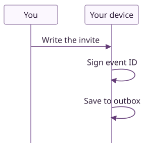
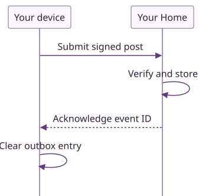
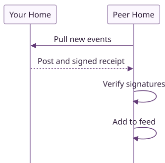
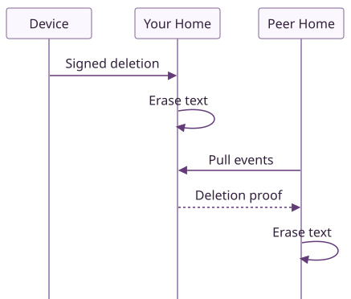

How a post travels.
Follow a book-swap invite from your phone to a neighbor’s feed, through the community-run servers Yap calls Homes.
1. Sign the post.
You write “Book swap on Sunday?” Your device signs a record of the invite and saves it in its outbox. That signature lets a Home check which device signed it and whether the post has changed.

2. Send it Home.
Your device sends the invite to your Home. The Home checks the signature and your permission to post, then signs and stores its acceptance. Its acknowledgement lets your device clear the outbox.

3. Reach a neighbor.
A peer Home asks yours for new events in their shared community. It checks the device signature and your Home’s signature before saving the invite. A neighbor can now read it in that Home’s feed.

4. Take it down.
You delete the invite. Your device signs a new event referring to the original. Your Home removes the text and keeps the proof. The peer does the same when it next pulls the deletion.

Protocol notes.
What does the device sign?
The device gives the event an ID that commits to the post’s contents, then signs that ID with its private key. The Home resolves a named byline against the author’s current profile when it serves the feed. Anonymous bylines omit that profile, though Homes can still link posts by their signing identifiers.
What if the connection drops?
The device keeps the signed event in its outbox until its Home acknowledges the same ID. The Home checks the signature and posting permission, signs an acceptance record and saves it. If the acknowledgement gets lost, a retry returns the same ID and the invite appears just once.
Which Homes get a copy?
This example uses two Homes authorized for the same community. The peer asks for new events, checks both the device and Home signatures, and saves the invite so its members can read it. Each Home decides which origins it trusts. The diagram illustrates public posts. Private messages use a separate encrypted mailbox protocol.
What survives a deletion?
The author sends a signed deletion for the original event ID. Once a participating Home verifies it, the Home removes the post text and its random salt, retaining a header and signed proof of deletion. An offline peer catches up when it syncs. Readers may still have screenshots or other copies.